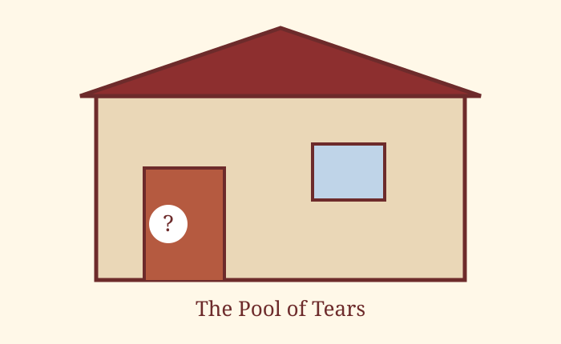

Chapter 2
The Pool of Tears

Image source/license: original class project illustration, public domain.
“Curiouser and curiouser!” cried Alice. She was so much surprised that for the moment she quite forgot how to speak good English.
She soon found herself growing larger and larger. At first she thought she would wait and see what would happen next, but this was not a comfortable situation.
Alice felt very lonely and began to cry again. She went on shedding gallons of tears, until there was a large pool all round her.
After a while she heard a little pattering of feet in the distance and quickly dried her eyes to see what was coming.